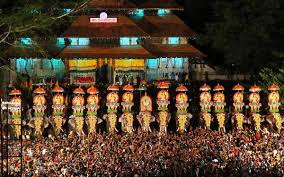
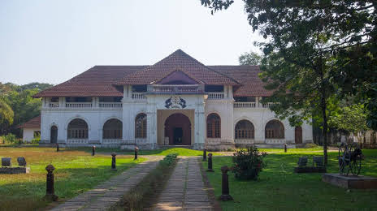
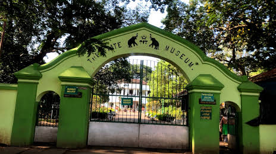
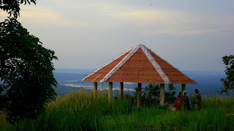
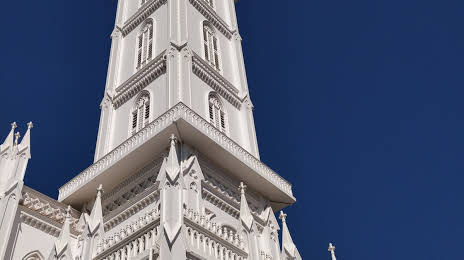

THRISSUR
Thrissur is a city in the south Indian state of Kerala. It's known for sacred sites and colorful festivals. In the center is Vadakkumnathan Temple, dedicated to Lord Shiva and adorned with murals. The ornate, Indo-Gothic Our Lady of Dolours Basilica is nearby. To the north, Thiruvambady Temple is home to several elephants. Sakthan Thampuran Palace houses an archaeology museum with bronze statues and ancient coins
IMPORTANT PLACES TO VISIT

SAKTHAN THAMPURAN PALACE


THRISSUR ZOO AND MUSEUM
VILANGAN HILLS
